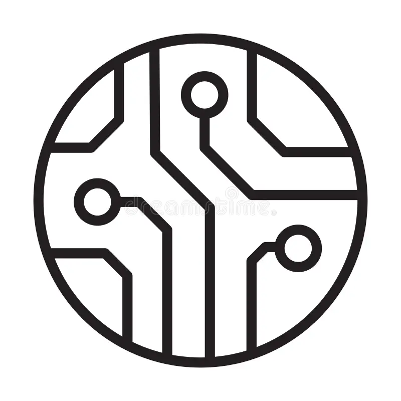
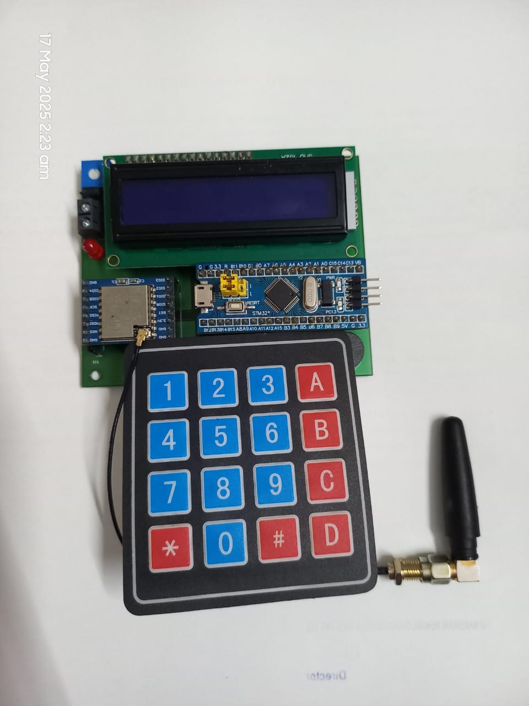
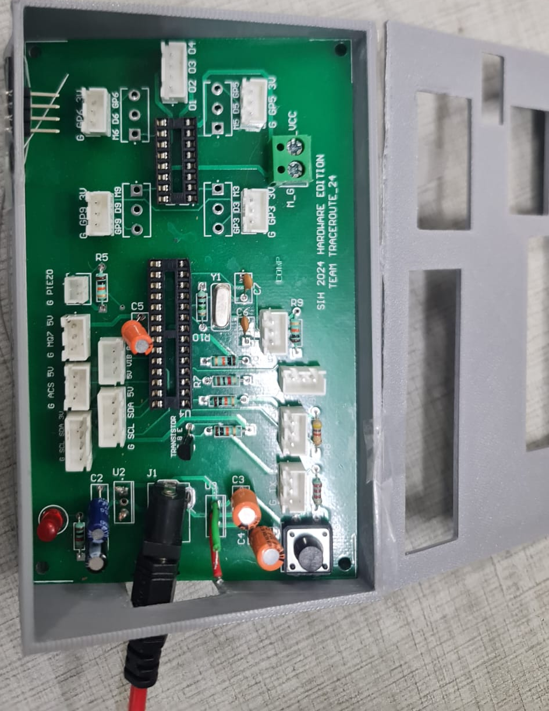

Experience

Terul Electronics
Intern – Hardware Development
• Developed and maintained master component libraries in Altium Designer
• Supported schematic design and PCB development
• Worked on Flyback controller design for SMPS applications

Freelance PCB Designer
• Designed custom PCBs for embedded and IoT applications
• Converted functional requirements into schematics and layouts
• Focus on manufacturability, documentation, and design best practices
Spacetug
Project Trainee – Hardware & Firmware
• PCB design and fabrication
• Firmware development for embedded systems
• Hardware–software integration in early-stage prototypes
Projects
AI at the Edge for Emergency Communication over Satellite Links
Research-oriented project in collaboration with NXP Semiconductors at TU Hamburg. Designed an AI-assisted emergency communication system on the i.MX95 platform to enable meaningful and context-aware communication over satellite links with minimal data rates. Implemented Speech-to-Text (STT) and Text-to-Speech (TTS) directly on the edge device and utilized OpenAirInterface for device-to-device communication.

Enhancing Maritime Safety Using LoRaWAN
Developed a low-power emergency communication system using STM32 microcontrollers and LoRaWAN for long-range maritime applications. Implemented GPS-based navigation support and real-time weather alerts. Designed a custom PCB to improve reliability and compactness under harsh environmental conditions and developed a LoRa gateway for external network connectivity.

Customized Telematic Control Unit for Fleet Management
Designed a custom Telematic Control Unit (TCU) and Vehicle Interface Module (VIM) to capture vehicle data without relying on factory telemetry ports. Integrated multiple sensors to collect engine performance, payload, fuel efficiency, location, and diagnostic data. Developed firmware and a real-time monitoring dashboard with AI-driven insights and reporting capabilities.
